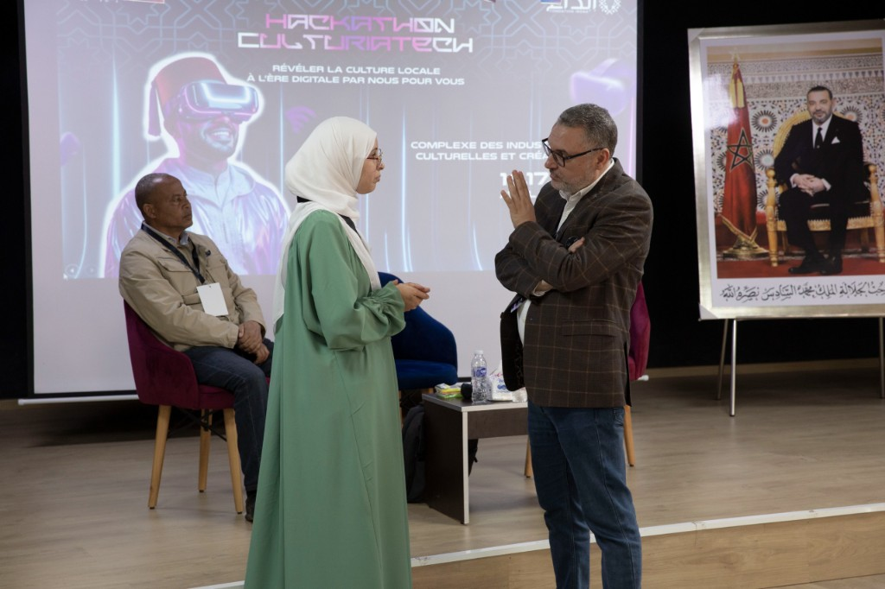
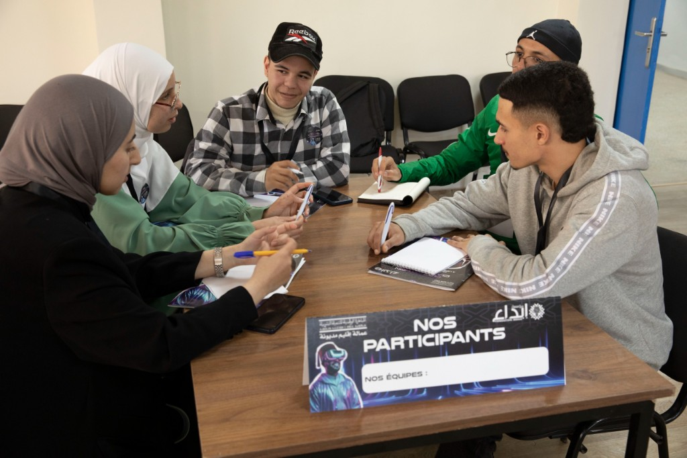
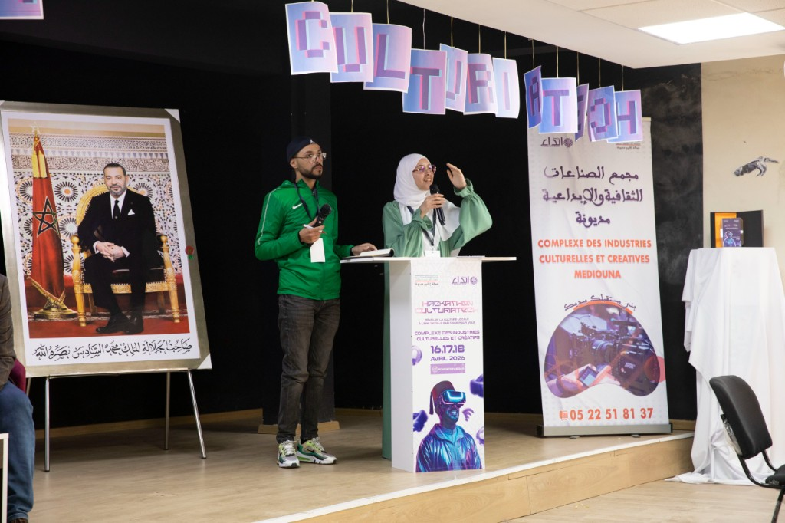

من نحن
الأصل اسم يرمز إلى الأصالة المغربية وإلى مدينة مديونة كنقطة انطلاق: حيّز جغرافي نخدمه بدقة، بلغة عربية واضحة، وبألوان مستوحاة من الزليج والزربية والفخار.
رؤيتنا
أن يصبح طلب حرفة تقليدية أو خدمة منزلية في الجهة أمراً شفافاً: ملف حرفي موثّق، تواصل آمن، وتجربة موحّدة بين الويب والهاتف.
قيمنا
الثقة — نفضّل الوضوح في الأسعار والوصف.
الاحترام — للحرفي وللزبون.
الجذور — دعم المهن التقليدية المحلية.
فريقنا
لقطات من مشاركتنا في فعاليات ربط الثقافة المحلية بالرقمنة، والعمل الجماعي حول منصّة الأصل.


